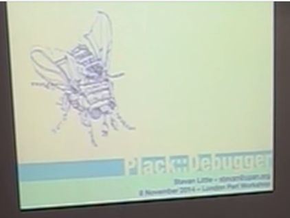

Plack::Debugger meets Dancer2
Peter Mottram (SysPete) <peter@sysnix.com>
Perl::Dancer Conference 2016, Vienna
LPW 2014
Stevan
History of Debugging on the WWW
1994
Perl 5
#!/usr/local/bin/perl
print "Content-type: text/html\n\n";
print "<html>\n";
print "<body>\n";
print "<h1>HELLO WORLD!</h1>\n";
print "</body>\n";
print "</html>\n";
warn("WTF is going on !!!!!! $x");
1996
CGI.pm
#!/usr/local/bin/perl
use CGI qw(:all); # CGI.pm module is very useful!
print
header,
start_html,
h1("HELLO WORLD!"),
end_html;
warn("WTF is going on !!!!!! $x");
1999
HTML::Mason
autohandler
<html>
<head>
<title><% $title %></title>
</head>
<body>
<h1><% $title %></h1>
% $m->call_next;
</body>
</html>
index.html
<%perl>
my $title = 'HELLO WORLD!';
</%perl>
<h1><% $title %></h1>
warn("WTF is going on !!!!!! $x");
2002
HTML::Mason::Exception
warn("WTF is going on !!!!!! $x");
warn("WTF is going on !!!!!! $x");

Response.Write("WTF is going on !!!!!!");
Response.Write(x);
Response.Write("<!--");
Response.Write("WTF is going on !!!!!!");
Response.Write(x);
Response.Write("-->");
2001
Java
2008
2009
PSGI
(
2014
Acknowledgements
Stevan Little